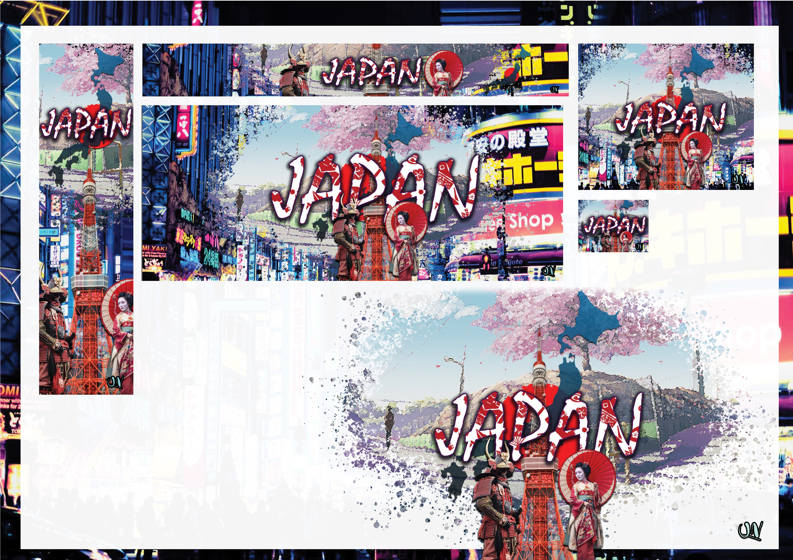
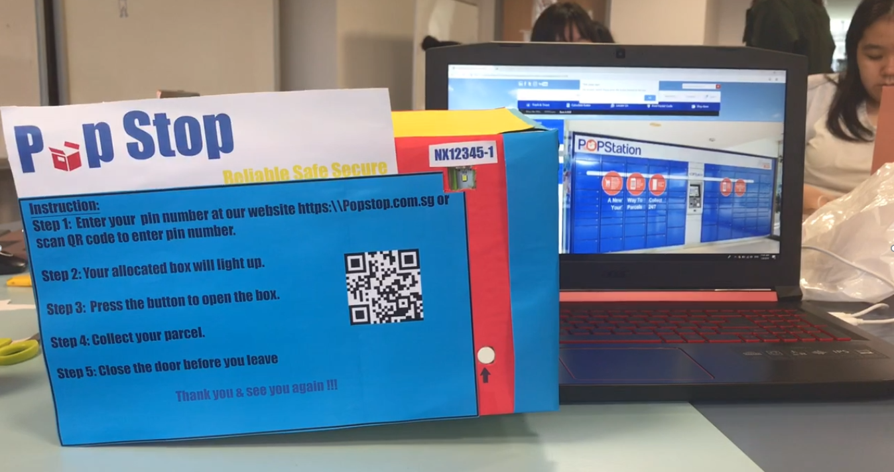
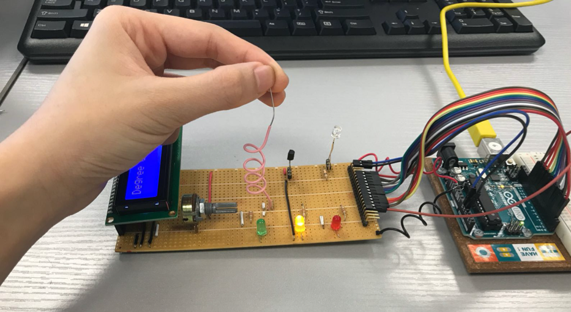
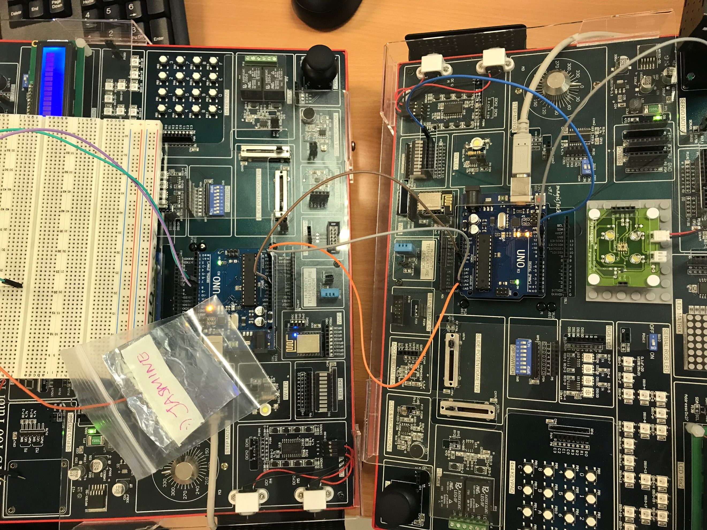

Web Banner – Digital Media Design
Designed a promotional web banner to attract tourists to Japan, highlighting cultural elements such as samurai heritage, cherry blossom traditions (hanami), and geisha arts.
Contact: nqnhu1@email.com

Designed a promotional web banner to attract tourists to Japan, highlighting cultural elements such as samurai heritage, cherry blossom traditions (hanami), and geisha arts.

Developed a practical security-focused system project. Awarded Best Project Concept & Implementation at the DMIT End Semester Showcase (2019).

Designed a smart planter system to help farmers monitor plant conditions such as nutrients, water, and light levels using sensor-based data.

Built an electronic control system allowing remote operation of a sliding door using sensors and LED indicators, improving workflow efficiency in a factory scenario.